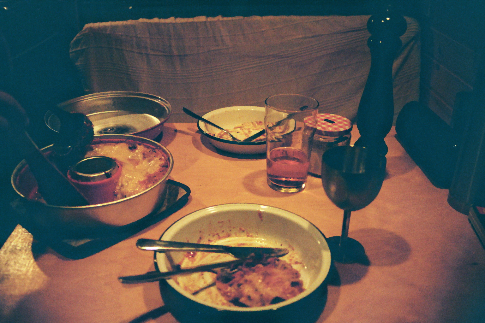

Home
The best Veggie Lasagna in town

How to make a very nice veggie Lasagna
This is my best recipe for veggie Lasagna. It is based on mushrooms and miso and those take care of the "umami"
You'll need a little bit of time, but i promise, it is worth it!
Ingredients
- 500g Portobello
- 100g Tomato concentrate
- 1 carrot
- 1 onion
- 2 garlic
- 1 small piece of ginger
- 1 can tomatoes
- 1 tbls miso
Steps
- cut the vegetables very fine
- fry the mushrooms in a really heavy pan
- add the onion, the garlic, the ginger
- stir occasionally
- put the miso in the pan and stir
- add the tomatoes and let it sit for half an hour